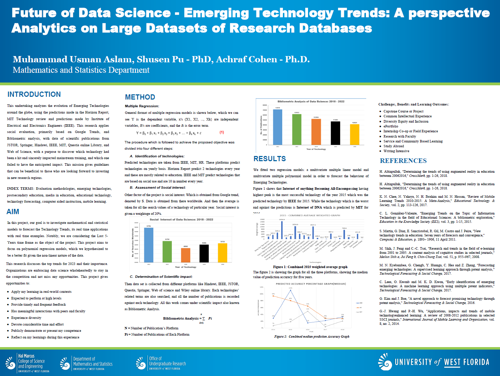

Emerging Technology Trends: A Perspective Analytics on Large Datasets of Research Databases
Abstract
This undertaking analyses the evolution of Emerging Technologies around the globe, using the predictions made in the Horizon Report, published yearly from 2004, MIT Technology review and predictions made by Institute of Electrical and Electronics Engineers (IEEE). This research applies social evaluation, primarily based on Google Trends, and Bibliometric analysis, with data of scientific publications from IEEE, MIT, Questia online Library, JSTOR, Springer, Hindawi and Web of Science, with a purpose to discover which technology had been a hit and sincerely impacted mainstream training, and which one failed to have the anticipated impact. This mission gives guidelines that can be beneficial to those who are looking forward to investing in new research regions.
INDEX TERMS: Evaluation methodologies, emerging technologies, postsecondary education, media in education, educational technology, technology forecasting, computer aided instruction, mobile learning.
